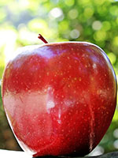

산길
오늘 아침 일찍 산에 올랐다. 아침 온도는 15º이었다 가지고 간 물의 ½을
마셨다. 한참 올라 가는 도중에 약수터를 가리키는 ↰ 사인이 보였다. 불현듯
양두종 님의 산길이란 시에 곡을 붙인 박태준의 가곡♪이 생각이 났다
산길을 간다. 말없이
호올로 산길을 간다
해는 져서 새소리 그치고
짐승의 발자취 그윽히 들리는
산길을 간다 말없이
밤에 홀로 산길을 간다
© Copyright(c) 황기태 All right reserved. ☎ 010-0000-9999
도시 소개
- California
-
맑고 화창한 날씨가 좋고 태평양의 아름다운 해변을
가진 멋진 주
- Florida
-
미국의 동남부에 위치한 주로서 많은 휴양 도시가
있고 미국의 최남단이 연결된 아름다운 주
- Texas
-
드넓은 목장들이 있어 텍사스 바베큐로 유명하고 석
유가 생산되는 주
살빼는 방법
- 고기를 많는 먹는 고기 다이어트
- 채소를 많이 먹는 채소 다이어트
- 적게 먹고 운동하는 운동 다이어트
나의 셀카
나의 셀카
 |
 |
신체 검사
학생 신체 검사 표
| 이름 | 키 | 체중 | 시력 |
|---|
| 황기태 | 179 | 67 | 1.0 |
| 이재문 | 177 | 77 | 2.0 |
| 정인환 | 189 | 87 | 1.2 |
| 평균 | 181 | 77 | 1.3 |
|---|
과일 수입
과일 수입 표
| 사과 | 바나나 | 망고 |
|---|
|  |
|
|
| 페루 | 필리핀 | 호주 |
|---|
웹 프로그래밍 참조 사이트